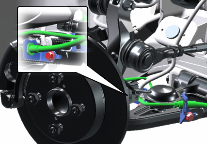
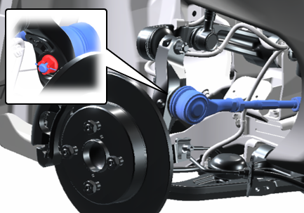
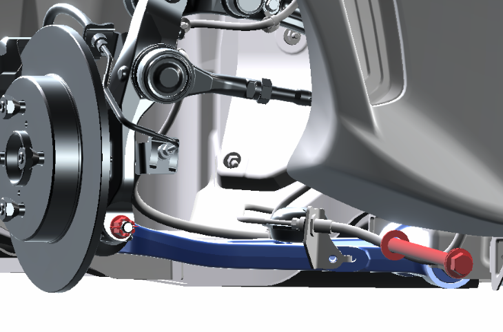
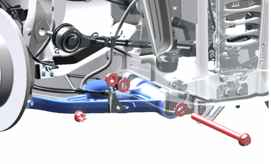

7-1-4 ロアアーム
準備品
|
油脂・その他 |
軸力安定剤 |
構成図
|
1 |
ARM SUB-ASSY, SUSPENSION LWR, RH (D8603-B1000) |
2 |
BOLT FLANGE, LWR ARM (D8629-09J71) |
|
3 |
NUT, FLANGE (Z5129-00000) |
4 |
NUT, CASTLE W/FLANGE (D9321-81200-A) |
|
5 |
WASHER, LWR ARM (D9461-16301) |
6 |
PIN, COTTER (D9551-18250-A) |
取り外し前作業
-
車両をジャッキアップし、フロントホイールを取り外す。
取り外し手順

1.ロアアームRH取り外し
-
ボルトを外し、ブレーキパイプを切り離す。

-
コッターピンを取り外す。
-
ROD_ASSY_SUSPENSION_CONTROL取付ナットを取り外す。

-
コッターピンを取り外す。
-
ナットを取り外し、フロントアクスルを切り離す。
-
ボルトナットを取り外し、ロアアームを取り外す。
取り付け手順

1.ロアアーム取り付け
-
ボルトに軸力安定剤を塗布する。
-
ボルト、ワッシャーおよびナットでロアアームを取り付ける。
-
ナックルアームを取り付け、キャッスルナットを締め付ける。
-
キャッスルナットを規定トルクで締め付け後、コッタピンを取り付ける。
2.フロントアクスルASSY取り付け
-
ROD ASSY, STEERINGを取り付ける。
-
キャッスルナットを締め付ける。
-
キャッスルナットを規定トルクで締め付け後、コッタピンを取り付ける。
-
ボルトでブレーキパイプを取り付ける。
3.フロントホイールを取り付ける。